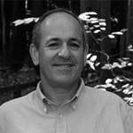
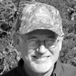
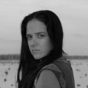

CSS Announces Spring 2016 Brown Bag Lecture Series
“The bio-geo-socio-chemistry of urban riparian zones”
Click here to watch Peter Groffman’s full lecture.
Peter Groffman
Research Scientist in Microbial Ecology & Urban Ecology
Cary Institute of Ecosystem Studies
Thursday, Jan 28 Noon-1:00pm Design Building 215
In the Baltimore Ecosystem Study, one of two urban long-term ecological research (LTER) projects funded by the U.S. National Science Foundation, we are using “the watershed approach” to integrate ecological, physical and social sciences. Watersheds are a natural (and well-used) physical unit for bio-geo-chemical research and can also function as a focus for human-environment interactions, i.e. bio-geo-socio-chemistry. Suburban watershed input/output budgets for nitrogen (N) have shown surprisingly high retention which has led to detailed analysis of sources and sinks in these watersheds. Riparian zones, thought to be an important sink for N in many watersheds, have turned out be N sources in urban watersheds due to hydrologic changes that disconnect streams from their surrounding landscape. Geomorphic stream restoration designed to reverse structural degradation caused by urban runoff can increase in-stream retention by creating features with high denitrification potential. Considering the “human element” in these biogeochemical source and sink processes is critical to improving the environmental performance of urban and suburban ecosystems. Including human goals in stream restoration can help to establish connections between people and streams, which can lead to improvements in water quality as people become monitors and advocates for stream ecosystem integrity. Creating positive feedbacks between ecological restoration and human preferences can be key for achieving specific biogeosociochemical goals in urban and suburban watersheds.
Peter M. Groffman is a Professor at the City University of New York Advanced Science Research Center and Brooklyn College, with research interests in ecosystem, soil, landscape and microbial ecology, with a focus on carbon and nitrogen dynamics. Groffman is chair of the Executive Board of the U.S. National Science Foundation funded Long-Term Ecological Research (LTER) network Science Council and a participant in LTER projects in Baltimore (urban) and New Hampshire (northern hardwood forests). Specific recent research efforts include studies of nitrogen dynamics in urban watersheds, lawns, riparian zones and forests, winter climate change effects on nutrient cycling in forests, calcium/nitrogen/carbon interactions in forests, and the effects of exotic earthworm invasion on soil nitrogen and carbon cycling. Groffman was a Convening Lead Author for the 2013 U.S. National Climate Assessment Chapter on Ecosystems, Biodiversity and Ecosystem Services and a lead author for the Second (Wetlands) and Third (North America) Assessment Reports of the Intergovernmental Program on Climate Change (IPCC).
“Coordinating NGO Advocacy with $16 Billion on the Table: Restoring the Gulf after the Deepwater Horizon Disaster”
Click here to watch David Muth’s full lecture.
David Muth
Director, Gulf Restoration Program
National Wildlife Federation
Thursday, Mar 3 Noon-1:00pm Design Building 215
David Muth is a New Orleans native who has spent a lifetime in the Mississippi River delta and on the Gulf coast, studying its geology, ecology, plants, wildlife, history and culture. He took his degree in history at University of New Orleans and became professionally interested in the connection between culture and environment in the context of the delta. He worked for 30 years with the National Park Service at Jean Lafitte National Historical Park and Preserve in south Louisiana, eventually managing its natural and cultural resource programs. At the beginning of 2011, he joined the National Wildlife Federation and is the Director of the Gulf Restoration program, working in all five Gulf states, combining advocacy, outreach, education, science, and communications, along with state and federal policy initiatives, to bring about comprehensive, large-scale restoration of Gulf ecosystems, from the Everglades to the Rio Grande.
“Seeds”
Click here to watch David Waggonner’s full lecture.
David Waggonner
Principal Architect
Waggonner + Ball Architect
Thursday, Mar 17 Noon-1:00pm Design Building 215
David Waggonner is president of Waggonner & Ball, an award winning, internationally active architecture practice located in New Orleans. He is a graduate of Yale School of Architecture and a Fellow in the American Institute of Architects. In the aftermath of Hurricane Katrina, David saw an opportunity for New Orleans to reinvent itself as a safe, resilient, economically vibrant city through embracing its life-blood: water. This was manifested in the Dutch Dialogues workshops that led to the Greater New Orleans Urban Water Plan, now being developed through the city’s winning National Disaster Resilience Competition Urban Delta entry for the Gentilly Resilience District.
“Living on the Edge: Interdisciplinary Approaches to Coastal Management”
Judith Swift
Director, Professor of Communication Studies & Theater
URI Coastal Institute, University of Rhode Island
Thursday, Apr 7 Noon-1:00pm
NOTE LOCATION CHANGE:
“The Commons” (Rm 104) Design Building
The Coastal Institute (CI) at the University of Rhode Island has a mandate to develop and support interdisciplinary efforts that ensure evolving scientific thought and methodologies will be applied to coastal management and resilience. CI director Judith Swift will discuss how their various enterprises promote the “care and feeding” of scientists, regulators, elected officials, NGOs and the general public—all to the benefit of coastal health.
Judith Swift serves as the director of the Coastal Institute and a Professor of Communication Studies and Professor of Theatre at the University of Rhode Island. Her research focus is the translation of science to the public. She often employs the arts as a means to translate science for the lay public, using emotional learning as a means to stimulate interest in and “stickiness” of information. Among her most recent works are a cabaret on adaptive management of coastal ecosystems, It’s a Shore Thing, which has been performed at over four dozen local, regional and national science conferences; and The Katrina Project, a dramatic piece based on over 90 interviews Swift conducted in New Orleans and the Mississippi Delta following Hurricane Katrina, which has had performances and readings throughout the country.
SPECIAL WORKSHOPS FOR GRADUATE AND UNDERGRADUATE STUDENTS!
Thursday, Apr 7 5:00-6:30pm E207 Howe Russell
“Leadership: The Challenge of Leading and Value of Following”
Leadership is bandied about all the time but we know Ghandi just started marching toward the salt and Martin Luther King, Jr. did not pronounce a dream of leadership. What makes a good leader and how can you recognize, support or be one? Join a workshop that just may provide some awareness.
Friday, Apr 8 2:00-3:30pm LOCATION CHANGE: 215 Design Bldg
“Fear and Loathing in Science Communication: How Broadway May Save You”
Hate making public presentations? Resent the reduction of your science to a single poster? Looking for ways to make your high school friends stop calling you a geek? Loathe the burden of becoming a great communicator? Then this workshop is for you. Come learn some tricks from a professional theatre director and get on the road to loving the spotlight.
Monique Verdin
Documentary Photographer and Filmmaker
Vision Maker Media
Thursday, Apr 21 Noon-1:00pm Design Building 215
NOTICE: LECTURE HAS BEEN CANCELLED
Monique Verdin is a native daughter of southeast Louisiana. Her intimate documentation of the Mississippi River Deltas’ indigenous Houma nation exposes the complex interconnectedness of environment, economics, culture, climate and change. Monique is the subject/co-writer/co-producer of the documentary My Louisiana Love (2012). Her interdisciplinary work has been exhibited nationally and internationally and is included in an assortment of environmentally inspired projects, ranging from the publication of Unfathomable City : A New Orleans Atlas (2013) to the multiplatform/performance/ecoexperience Cry You One (2012-2015). Since the spring of 2015, she has been working on a new project, The Land Memory Bank & Seed Exchange, a series of southeast Louisiana activations, engaged in building a community record and in the sharing of native seeds and local knowledge through citizen collaboration.
TWO SPECIAL SCREENINGS OF “MY LOUISIANA LOVE” DOCUMENTARY!
Tuesday, Apr 19
12PM AND 6PM
Design Building 104